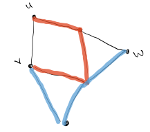
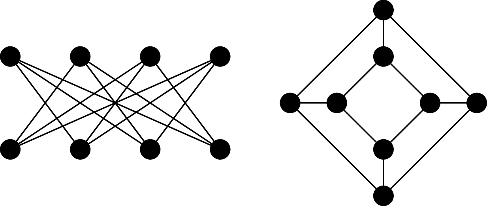
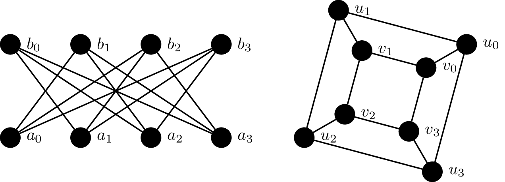

Graphs, as in Unit 1, are well-defined items with rigorous definitions that need to be argued about. Writing proofs on graphs requires us to be logically consistent, to structure our argument well, and to sometimes be creative with how we manipulate the objects we are given to create new ones.
That said, more like Unit 2, graphs also have a lot of properties that can be argued about through analog or comparison. They definitely feel more tangible than the natural numbers themselves, and lend themselves to the ability to make arguments more like Unit 2 that rely to some extent on the intuition we have about what these objects are like.
Let's look at an example.
Let $G$ be a graph and $u,v,w$ be vertices. If there exists a path from $u$ to $v$ and a path from $v$ to $w$, then there exists a path from $u$ to $w$.
The obvious thing to do here, of course, is to string together our two paths. In real life, if there's a path from $u$ to $v$ and a path from $v$ to $w$, then clearly if we want to go from $u$ to $w$ we'd just walk from $u$ to $v$ and from $v$ to $w$. However, remember that a path, as defined, can not repeat any vertices! Consider the following graph. Here, the first path goes from $u$ to $v$ and is highlighted in red. The second path from $v$ to $w$ is in blue. If one naively takes the union of the paths, then the result is not a path (for example, it has a cycle).

However, this picture also gives us a sense of how we might actually approach the problem. There's clearly a path from $u$ to $w$ in this graph that follows the red path until they intersect and follows the blue path to get to $w$. Let's look at a formal proof.
Let $a_0,\ldots,a_m$ be a path from $u=a_0$ to $v=a_m$ and $b_0,\ldots,b_n$ be a path from $v=b_0$ to $w=b_n$. Denote by $i$ the smallest value where $a_i = b_j$ for some $j$. Then consider the sequence \[u=a_0, a_1, ..., a_{i-1}, a_i, b_{j+1}, ..., b_{n-1}, b_n=w. \]
To show that this sequence is a path, we must argue that it is both a walk and does not repeat any vertices. It clearly is a walk — any two consecutive vertices here were consecutive vertices in a valid path, so they must have been adjacent.
Next, we argue that this path does not repeat any vertices. Note that none of the $a$ vertices represent repeated vertices and none of the $b$ vertices represent repeated vertices, because these vertices are part of two paths, respectively. The only possible repeated vertices are some $a_{i'} = b_{j'}$, where $i' \neq i$ and $j' \neq j$. Assume, to obtain a contradiction, that $a_{i'} = b_{j'}$. Because $a_{i'}$ is on this walk, $i' \leq i$ (and if $i' = i$, then $j' \neq j$.) But if $i' < i$, this contradicts the claim that $i$ is the smallest value we could have chosen. If $i'=i$, then $b_{j'} = a_{i'} = a_{i} = b_{j}$, so $j'=j$, which is a contradiction. Thus, no repeated vertices can exist in this walk, so it is a path.
You can see here that our statement was incredibly straightforward and probably pretty intuitive, but still required us to do a good amount of analysis and careful considering to write our formal proof. This is where our learnings from Unit 1 are important — we need to make sure each step is logically sound and that our proof as a whole actually shows what we want it to.
Now let's look at another one. This one also follows intuition pretty naturally, stating that if there's a way to walk between two points, then you can do so without repeating any points.
Let $G$ be a graph and $u,v \in V$ be vertices. If there is a walk from $u$ to $v$, then there is a path from $u$ to $v$.
By the well-ordering principle, if there is a walk from $u$ to $v$, there is a shortest walk. Let the shortest walk from $u$ to $v$ be $v_0 v_1 \cdots v_k$, where $u = v_0$ and $v = v_k$. Note that this walk is of length $k$. We will show that this shortest walk is a path. If no vertex is repeated, then we already have a path from $u$ to $v$. So suppose, to obtain a contradiction, that a vertex is repeated. In other words, there exist $i, j$ with $i \lt j$ such that $v_i = v_j$. Then we can create a shorter walk \[ u = v_0 v_1 \cdots v_{i-1} v_i v_{j+1} v_{j+2} \cdots v_k = v, \] which is valid since $v_iv_{j+1} = v_jv_{j+1}$. We have deleted $j-i\geq 1$ vertices, so this contradicts the minimality of the length of our original walk. Thus there are no repeated vertices in our walk and therefore we can form a path from $u$ to $v$.
It turns out that this theorem is pretty powerful despite how obvious it seems. For example, it gives us a much shorter proof of Theorem 10.14 by saving the original attempt we made.
Let $a_0,\ldots,a_m$ be a walk from $u=a_0$ to $v=a_m$ and $b_0,\ldots,b_n$ be a walk from $v=b_0$ to $w=b_n$. Consider the sequence \[ a_0,\ldots,a_m,b_1,\ldots,b_n. \] Note that we've started from $b_1$. This is a valid walk because $a_m = v = b_0$. Moreover, it is a walk from $u$ to $w$. Theorem 10.15 implies there is a path from $u$ to $w$.
Another sort of "common sense" theorem says that if we have two distinct paths with the same ends, then we have a cycle in our graph. Be careful: distinct doesn't mean disjoint. In other words, the two paths can share some vertices and edges, but will contain different edges at some point.
Let $G = (V,E)$ be a graph. If there exist $u,v \in V$ such that there are two distinct paths between $u$ and $v$, then $G$ contains a cycle.
Note that the cycle might not contain $u$ or $v$.
Consider two distinct paths $P_1$ and $P_2$ between vertices $u$ and $v$. Let $a_0,a_1,\ldots,a_m$ be the vertices of $P_1$ and $b_0,b_1,\ldots,b_n$ be the vertices of $P_2$, where $a_0 = b_0 = u$ and $a_m=b_n=v$, but $m$ is not necessarily equal to $n$. Since the two paths are distinct, there is an edge that is in one path but not the other. Without loss of generality, suppose $a_ia_{i+1}$ is in $P_1$ but not $P_2$.
Consider the graph $G - a_ia_{i+1}$, that is, $G$ without the edge $a_ia_{i+1}$. Now, consider the walk \[ a_i a_{i-1} \cdots a_0 b_1 \cdots b_n a_{n-1} \cdots a_{i+1}. \] This walk from $a_i$ to $a_{i+1}$ is valid because $a_0 = b_0$ and $b_n = a_n$. Note that it does not use the edge $a_ia_{i+1}$. By the previous theorem, there is a path between $a_i$ and $a_{i+1}$ in $G - a_ia_{i+1}$. Then the addition of the edge $a_ia_{i+1}$ to this path forms a cycle in $G$.
Consider the following diagrams of graphs.

From the perspective of many applications, these graphs represented by these diagrams would be considered the "same".
Although the visual representation of the graph is very convenient, it is sometimes misleading, because we're limited to 2D drawings. In fact, there is a vast area of research devoted to graph drawing and the mathematics of embedding graphs in two dimensions. The point of this is that two graphs may look very different, but turn out to be the same.
But even more fundamental than that, we intuitively understand that just because the graph isn't exactly the same (i.e., the vertices are named something differently) doesn't mean that we don't want to consider them equivalent. The next definition is how we define whether two graphs are basically the same, just with different names or drawings.
An isomorphism between two graphs $G_1 = (V_1,E_1)$ and $G_2 = (V_2,E_2)$ is a bijection $f:V_1 \to V_2$ which preserves adjacency. That is, for all vertices $u,v \in V_1$, $u$ and $v$ are adjacent in $G_1$ if and only if $f(u)$ and $f(v)$ are adjacent in $G_2$. Two graphs $G_1$ and $G_2$ are isomorphic if there exists an isomorphism between them. When $G_1$ and $G_2$ are isomorphic, we denote this by $G_1 \cong G_2$.
In other words, we consider two graphs to be the "same" or equivalent if we can map every vertex to the other graph such that the adjacency relationship is preserved. In practice, this amounts to a "renaming" of the vertices, which is what we typically mean when we say that two objects are isomorphic. Of course, this really means that the edges are preserved.
Consider the following graphs $G_1 = (V_1, E_1)$ and $G_2 = (V_2, E_2)$.

We will show that these two graphs are isomorphic by defining a bijective function $f:V_1 \to V_2$ which preserves adjacency: \begin{align*} f(a_0) &= u_0 & f(a_1) &= v_3 & f(a_2) &= u_2 & f(a_3) &= v_1 \\ f(b_0) &= v_2 & f(b_1) &= u_1 & f(b_2) &= v_0 & f(b_3) &= u_3 \\ \end{align*} This is a bijection, since every vertex in $V_1$ is paired with a vertex in $V_2$. We then verify that this bijection preserves adjacency by checking each edge under the bijection: \begin{align*} (f(a_0),f(b_1)) &= (u_0,u_1) & (f(a_0),f(b_2)) &= (u_0,v_0) & (f(a_0),f(b_3)) &= (u_0,u_3) \\ (f(a_1),f(b_0)) &= (v_3,v_2) & (f(a_1),f(b_2)) &= (v_3,v_0) & (f(a_1),f(b_3)) &= (v_3,u_3) \\ (f(a_2),f(b_0)) &= (u_2,v_2) & (f(a_2),f(b_1)) &= (u_2,u_1) & (f(a_2),f(b_3)) &= (u_2,u_3) \\ (f(a_3),f(b_0)) &= (v_1,v_2) & (f(a_3),f(b_1)) &= (v_1,u_1) & (f(a_3),f(b_2)) &= (v_1,v_0) \end{align*}
So an obvious and fundamental problem that arises from this definition is: Given two graphs $G_1$ and $G_2$, are they isomorphic? The obvious answer is that we just need to come up with an isomorphism or show that one doesn't exist. Unfortunately, to do this on a computer, there are $n!$ possible such mappings we would need to check. In fact, characterizing the complexity of solving the graph isomorphism problem is one of the most challenging problems in theoretical computer science. The most significant progress on this problem was made in 2015 (and 2017) by our own Lazlo Babai, who proved that graph isomorphism can be solved in $2^{O(\log^c n)}$ time for some constant $c$.
When determining if two specific graphs are isomorphic by hand, however, you can be clever and take shortcuts. A common tool is isomorphism invariants.
Let $P$ be a function on graphs. We say that $P$ is an isomorphism invariant if for all graphs $G_1,G_2$, $$ G_1 \cong G_2 \Rightarrow P(G_1)=P(G_2). $$
For example, $P(G) = |V|$ is clearly an isomorphism invariant, since the existence of a bijection implies the vertex sets have the same size. We can also show that $P(G)=|E|$ is an isomorphism invariant (exercise; one simple approach uses the handshaking lemma).
Here is another useful isomorphism invariant.
The degree sequence of a graph $G$ is the list of degrees of its vertices, in sorted order with repetitions allowed.
The degree sequence of a graph is an isomorphism invariant. In other words, if two graphs are isomorphic then they have the same degree sequence.
Assume $G_1\cong G_2$. We must show that $G_1$ and $G_2$ have the same degree sequence. Let $v_1,\ldots,v_n$ be the vertices of $G_1$ sorted by their degree; Then $(\deg(v_1),\ldots,\deg(v_n))$ is the degree sequence of $G_1$.
Since $G_1\cong G_2$, there exists a bijection $f$ between their vertex sets that preserves adjacency. Since $f$ is a bijection, the list $(\deg(f(v_1)), \ldots, \deg(f(v_n)))$ is also a list of the degrees of vertices in $G_2$.
Since $f$ preserves adjacency, for every $v_i$ in $G_1$, $\deg(v_i) = \deg(f(v_i))$. This means $$(\deg(f(v_1)), \ldots, \deg(f(v_n))) = (\deg(v_1),\ldots,\deg(v_n)).$$ Thus $(\deg(f(v_1)), \ldots, \deg(f(v_n)))$ is sorted as well, and is thus the degree sequence of $G_2$ as well as $G_1$.
Flipping around the definition of isomorphism invariant gives the following very simple theorem.
Let $P$ be an isomorphism invariant and $G_1,G_2$ be graphs. If $P(G_1)\neq P(G_2),$ then $G_1$ and $G_2$ are not isomorphic.
A $k$-coloring of a graph $G=(V,E)$ is a function $c:V \to \{1,2,\ldots,k\}$ such that for all $uv\in E$, $c(u) \neq c(v)$. A graph is $k$-colorable if there a $k$-coloring of $G$. For a non-empty graph $G$, we define $\chi(G)$, called the chromatic number of $G$, to be smallest $k$ such that $G$ is $k$-colorable.
For any non-empty graph we have $\chi(G) \leq |V|$. An easy way to see why is to consider the following coloring for a graph of $n$ vertices: just color each vertex its own color.
We will use $k$-colorability as an invariant to show that two graphs are not isomorphic.
The $k$-colorability of a graph is an isomorphism invariant. In other words, if two graphs are isomorphic then they have the same $k$-colorability.